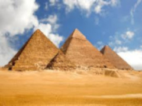
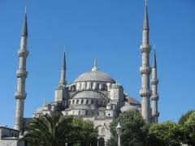
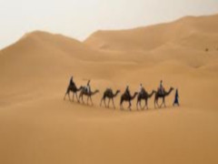

Morze Śródziemne — morze leżące pomiędzy trzema kontynentami: Europą, Afryką i Azją. Powierzchnia morza wynosi około 2,5 min km2, a zasolenie 33-39 @permil;. Na zachodzie jest połączone Cieśniną Gibraltarską z Oceanem Atlantyckim, przez cieśninę Dardanele łączy się z morzem Marmara i dalej, przez cieśninę Bosfor, z Morzem Czarnym, zaś przez Kanał Sueski z Morzem Czerwonym i dalej z Oceanem Indyjskim. Nad Morzem Śródziemnym leżą następujące państwa: Grecja, Cypr, Turcja, Syria, Liban, Izrael, Egipt, Libia, Tunezja, Algieria, Maroko, Hiszpania, Francja, Włochy, Malta.
|  |  |  |
| Egipt | Turcja | Maroko |
|---|
Turcja to państwo położone w Azji (na półwyspie Azja Mniejsza) i częściowo w Europie. Stolicą kraju jest Ankara. Inne ważne miasta: Istambuł. Antalya. Izmir. Kraj jest podzielony na 81 prowincji.
Egipt to państwo położone w północno-wschodniej Afryce. Staroegipska nazwa kraju oznacza „czarny ląd" i odnosi się do żyznych obszarów wokół Nilu. Stolicą kraju jest Kair, Inne ważne miasta: Aleksandria. Luksor, Asuan. Giza, W Egipcie przeważa klimat suchy zwrotnikowy. Ludność to głównie arabscy Egipcjanie.
Maroko to państwo położone w północno-zachodniej Afryce. Główne miasta to: Casablanka. Rabat. Fez. Marrakesz. Agadir, Tanger, Na wybrzeżach morskich przeważa klimat podzwrotnikowy, w głębi kraju skrajnie suchy. Kuchnia marokańska jest jedną z najatrakcyjniejszych w świecie arabskim. Bogactwo ziół i przypraw nadaje potrawom niepowtarzalny smak. Wspaniałe szczyty górskie skute lodem, rozległe plaże i gorące piaski Sahary są miejscami szczególnie wartymi zobaczenia.